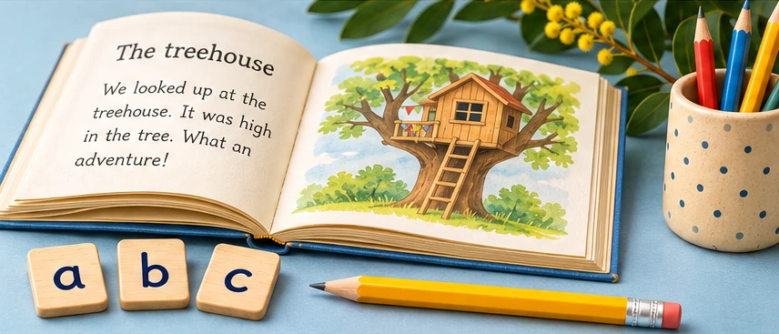

YEAR 1 · ENGLISH · READINGLittle stories.
Little stories.
Big discoveries.
Read a little. Imagine a lot.
Find a story, discover new words and follow the clues. Every reading is a small step towards greater confidence.
60 readings to exploreRead at your own pace

A new discovery on every page.1Choose a story
2Read & imagine
3Find the clues
4Have a go
Loading…
Read slowly. Picture the story in your mind.
—words
PAUSE & TALK
What happened in the story?
Tell someone about it in your own words. Go back and find a detail that helped you.
WORDS TO NOTICE
A few words to grow with.
Read each word aloud. Find it in the story, then use it in a sentence of your own.
Read the story again
01 · LOOK BACK AT THE STORY
Fill in the blank
02 · THE BIG PICTURE
What’s the main idea?
03 · FIND A CLUE
Find the detail
04 · WORDS IN CONTEXT
Word detective
05 · THINK A LITTLE DEEPER
Think & infer
BETTER TOGETHER
Explore Year 1 English →Make a little time for a story.
Take turns reading. Ask what might happen next, talk about a new word, and celebrate the effort.